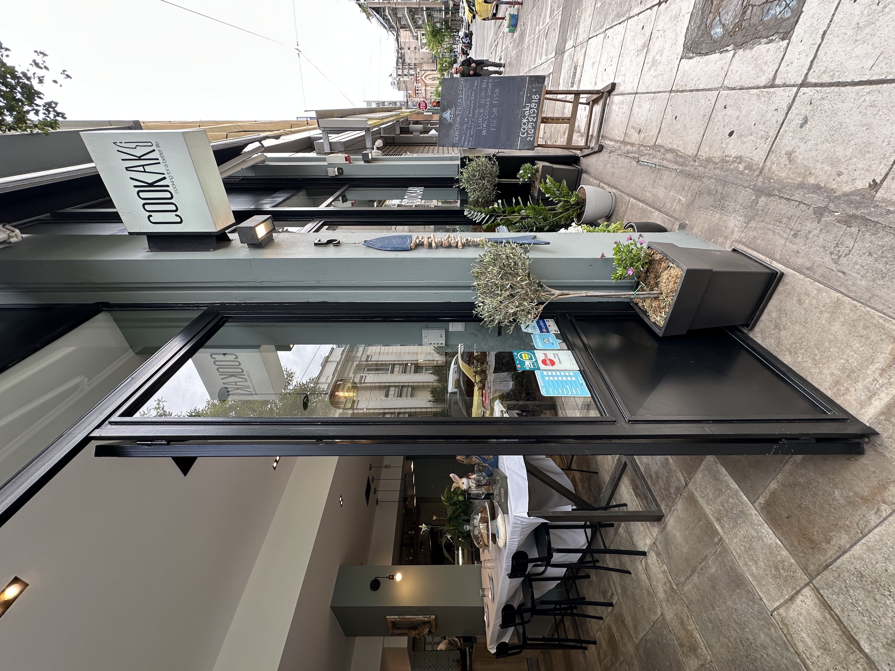

距离与路线
从卫城怎么走过来
从卫城博物馆沿 Makrygianni 街往南走进库卡基——Petmeza 5 约步行五分钟，就在博物馆南边两条街外。从 Dionysiou Areopagitou 的卫城入口出发，沿步行街下坡走大约十分钟。普拉卡（Plaka）与莫纳斯提拉基（Monastiraki）大约十五分钟。
最近的地铁是Akropoli 站（2 号线，红线），离我们门口走路三分钟——从 Syntagma、Monastiraki，或者坐经 Syntagma 的机场线过来都很方便。
- 卫城博物馆 —— 步行 5 分钟（约 400 米）
- 卫城 / 帕特农神庙 —— 步行 10 分钟
- Akropoli 地铁站（2 号线） —— 步行 3 分钟
- 普拉卡与莫纳斯提拉基 —— 步行 15 分钟
- 菲洛帕波斯山（Filopappou） —— 步行 8 分钟

为什么雅典人在这里吃饭
街坊的餐桌，不是游客陷阱。
离得近，也够本地
离卫城这么近的餐厅，大多是做一次性游客生意的。Cookaki 从 1956 年起就喂着库卡基这几条街的街坊——熟客每周都来，这就是菜好不好最靠得住的证明。
圣岩脚下的公道价
主菜 8–13 €，加酒吃一顿完整的人均大约 15–20 €——离博物馆才五分钟还能这个价，真不多见，毕竟那一带的价钱往往跟着景观一起涨。
够清爽，好继续游览
我们用希腊橄榄油、新鲜蔬菜，做得更清淡——一顿地道的希腊午饭，吃完你还走得回帕特农，而不是在公园长椅上睡过去。
点什么好
第一次来的话
先来传统慕萨卡（9.90 €），从 1956 年起就是厨房出名的招牌。再来一份埃维亚湾的当日鲜鱼（12.90 €）、一份希腊沙拉，想吃点蔬菜就来一份当日花园时蔬（8.90 €）。最后用一块圣塞巴斯蒂安焦香芝士蛋糕收尾。也不妨问问店里今天刚出锅的是什么——每日特供最能看出厨房的兴致。
如何找到我们
Petmeza 5, Koukaki — 雅典 11742
营业时间：周一到周六 09:00–16:00、19:00–22:00；周日 10:00–18:00。 致电 +30 21 0921 9818，或通过 +30 698 237 3505 联系我们。
距卫城博物馆步行五分钟
FAQ
在卫城附近用餐
Cookaki 距卫城博物馆多远？
走路大约五分钟。我们在 Petmeza 5，就在博物馆南边两条街。到卫城入口走十分钟左右；普拉卡和莫纳斯提拉基大约十五分钟。
这是游客餐厅还是本地餐厅？
一家从 1956 年就为库卡基掌勺的地道街坊小馆，雅典人会带上一家老小来的那种。谷歌 400 多条评价 4.9 ★，Tripadvisor 4.9 ★。
需要订位吗？
随时欢迎不预约直接来。不过旺季（4—10 月）和周末，我们非常建议先订位。可以在本网站订，也可以 WhatsApp +30 698 237 3505。
一顿饭大约多少钱？
主菜 8–13 €；加一杯葡萄酒吃一顿完整的下来，人均大约 15–20 €——离卫城这么近还能这个价，真的很难得。